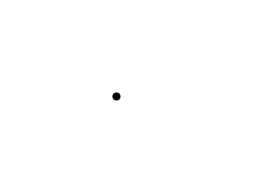

Motion

Last Updated 3/23/14
Now that we know how to render, handle input, and deal with time we can now know everything we need move around things on the screen. Here will do a basic dot moving around.//The dot that will move around on the screen
class Dot
{
public:
//The dimensions of the dot
static const int DOT_WIDTH = 20;
static const int DOT_HEIGHT = 20;
//Maximum axis velocity of the dot
static const int DOT_VEL = 10;
//Initializes the variables
Dot();
//Takes key presses and adjusts the dot's velocity
void handleEvent( SDL_Event& e );
//Moves the dot
void move();
//Shows the dot on the screen
void render();
private:
//The X and Y offsets of the dot
int mPosX, mPosY;
//The velocity of the dot
int mVelX, mVelY;
};
Here is the class for the dot we're going to be moving around on the
screen. It has some constants to define its dimensions and velocity. It
has a constructor, an event handler,
a function to move it every frame, and a function to render it. As for
data members, it has variables for its x/y position and x/y velocity.
Dot::Dot()
{
//Initialize the offsets
mPosX = 0;
mPosY = 0;
//Initialize the velocity
mVelX = 0;
mVelY = 0;
}
The constructor simply initializes the variables.
void Dot::handleEvent( SDL_Event& e )
{
//If a key was pressed
if( e.type == SDL_KEYDOWN && e.key.repeat == 0 )
{
//Adjust the velocity
switch( e.key.keysym.sym )
{
case SDLK_UP: mVelY -= DOT_VEL; break;
case SDLK_DOWN: mVelY += DOT_VEL; break;
case SDLK_LEFT: mVelX -= DOT_VEL; break;
case SDLK_RIGHT: mVelX += DOT_VEL; break;
}
}
In our event handler we're going to set the velocity based on the key press.
You may be wondering why we don't simply just increase the positon when we press the key. If we were to say add to the x position every time we press the right key, we would have to repeatedly press the right key to keep it moving. By setting the velocity, we just have to press the key once.
If you're wondering why we're checking if the key repeat is 0, it's because key repeat is enabled by default and if you press and hold a key it will report multiple key presses. That means we have to check if the key press is the first one because we only care when the key was first pressed.
For those of you who haven't studied physics yet, velocity is the speed/direction of an object. If an object is moving right at 10 pixels per frame, it has a velocity of 10. If it is moving to the left at 10 pixel per frame, it has a velocity of -10. If the dot's velocity is 10, this means after 10 frames it will have moved 100 pixels over.
You may be wondering why we don't simply just increase the positon when we press the key. If we were to say add to the x position every time we press the right key, we would have to repeatedly press the right key to keep it moving. By setting the velocity, we just have to press the key once.
If you're wondering why we're checking if the key repeat is 0, it's because key repeat is enabled by default and if you press and hold a key it will report multiple key presses. That means we have to check if the key press is the first one because we only care when the key was first pressed.
For those of you who haven't studied physics yet, velocity is the speed/direction of an object. If an object is moving right at 10 pixels per frame, it has a velocity of 10. If it is moving to the left at 10 pixel per frame, it has a velocity of -10. If the dot's velocity is 10, this means after 10 frames it will have moved 100 pixels over.
//If a key was released
else if( e.type == SDL_KEYUP && e.key.repeat == 0 )
{
//Adjust the velocity
switch( e.key.keysym.sym )
{
case SDLK_UP: mVelY += DOT_VEL; break;
case SDLK_DOWN: mVelY -= DOT_VEL; break;
case SDLK_LEFT: mVelX += DOT_VEL; break;
case SDLK_RIGHT: mVelX -= DOT_VEL; break;
}
}
}
When we release a key, we have to undo the velocity change when first
pressed it. When we pressed right key, we added to the x velocity. When
we release the right key here, we
subtract from the x velocity to return it to 0.
void Dot::move()
{
//Move the dot left or right
mPosX += mVelX;
//If the dot went too far to the left or right
if( ( mPosX < 0 ) || ( mPosX + DOT_WIDTH > SCREEN_WIDTH ) )
{
//Move back
mPosX -= mVelX;
}
Here's the function we call every frame to move the dot.
First we move the dot along the x axis based on its x velocity. After that we check if the dot moved off the screen. If it did, we then undo the movement along the x axis.
First we move the dot along the x axis based on its x velocity. After that we check if the dot moved off the screen. If it did, we then undo the movement along the x axis.
//Move the dot up or down
mPosY += mVelY;
//If the dot went too far up or down
if( ( mPosY < 0 ) || ( mPosY + DOT_HEIGHT > SCREEN_HEIGHT ) )
{
//Move back
mPosY -= mVelY;
}
}
Then here we do the same for the y axis.
void Dot::render()
{
//Show the dot
gDotTexture.render( mPosX, mPosY );
}
In the rendering function we render the dot texture at the dot's position.
//Main loop flag
bool quit = false;
//Event handler
SDL_Event e;
//The dot that will be moving around on the screen
Dot dot;
Before we enter the main loop we declare a dot object.
//While application is running
while( !quit )
{
//Handle events on queue
while( SDL_PollEvent( &e ) != 0 )
{
//User requests quit
if( e.type == SDL_QUIT )
{
quit = true;
}
//Handle input for the dot
dot.handleEvent( e );
}
//Move the dot
dot.move();
//Clear screen
SDL_SetRenderDrawColor( gRenderer, 0xFF, 0xFF, 0xFF, 0xFF );
SDL_RenderClear( gRenderer );
//Render objects
dot.render();
//Update screen
SDL_RenderPresent( gRenderer );
}
Finally here we use our dot in the main loop. In the event loop we
handle events for the dot. After that we update the dot's position and
then render it to the screen.
Now in this tutorial we're basing the velocity as amount moved per frame. In most games, the velocity is done per second. The reason were doing it per frame is that it is easier, but if you know physics it shouldn't be hard to update the dot's position based on time. If you don't know physics, just stick with per frame velocity for now.
Now in this tutorial we're basing the velocity as amount moved per frame. In most games, the velocity is done per second. The reason were doing it per frame is that it is easier, but if you know physics it shouldn't be hard to update the dot's position based on time. If you don't know physics, just stick with per frame velocity for now.